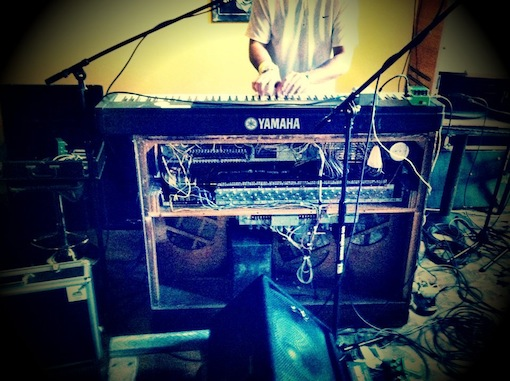

Formed in a time when the definition of “live music” seems in constant flux, Colorado’s
Springdale Quartet may upon first inspection seem slightly out of place with some of their contemporaries. Their sound and style, based foremost on a compositional foundation with its roots in the jazz and blues traditions, has been described at times as “vintage”. But the real stuff- the music itself- cannot be so readily labeled. Drawing additionally from the musical institutions of Heavy organ, upbeat funk, and progressive rock, Springdale’s live show is anything but antiquated – it’s dance music!

Blending reverence for the traditions of each members’ instrument with a desire to improvise musically results in the creation of new and distinctive sonic landscapes every night – for this four-piece, it’s about creating a sound that is dually familiar and unique; that both comforts and excites.
Springdale Quartet has performed at some of Colorado’s most prominent venues and festivals and has directly supported acts including Maceo Parker, Victor Wooten, Soulive, The New Mastersounds, Marco Benevento and the Benevento/Russo Duo, Kyle Hollingsworth, The Bad Plus, Karl Denson, The M&M’s, and more. Never forgetting to have a sense of humor, Springdale Quartet has emerged from their humble beginnings on Springdale Lane in Boulder to make a lasting impression on the ever-growing Colorado music scene and beyond, and they’re doing it in style…
With the help of Brad Smalling (Evergroove Studio) and Grammy-Winning Mastering Engineer David Glasser (Airshow Mastering), Springdale Quartet released their first full length debut album titled “Noisefactory” on May 7th, 2011. 2013 saw the band release their second full-length record produced and mixed by Soulive’s Alan Evans titled “Heist”. All music available on iTunes, BandCamp, Amazon, and most streaming services. Stay tuned for "Decades" 2016!